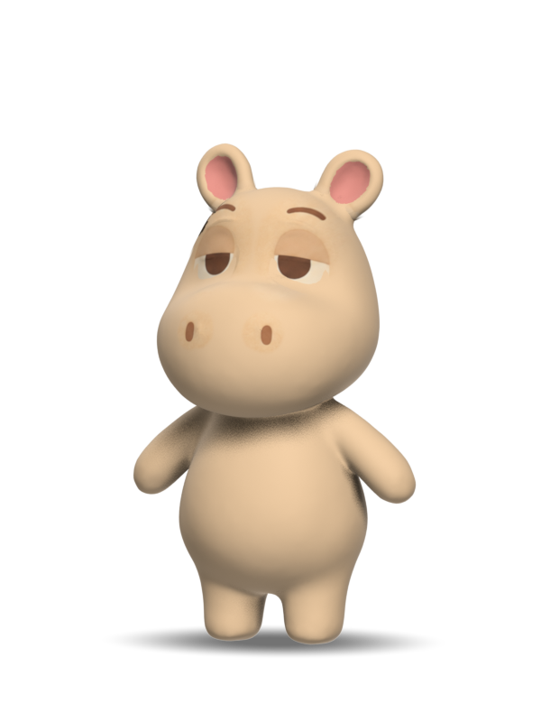

① 꾹 누르면 시작
나의 작은 승리 유리병
지금까지 구슬 37개. 구슬은 줄어들지 않아.
구슬을 꾹 누른 채로 쓸어 봐
0.3초 꾹 누르면 '쓸어 보기' 시작 + 톡 진동.
그냥 위아래로 밀면 지금처럼 화면 스크롤.
방
유리병
꾸미기
설정
구슬 하나를 짧게 톡 눌러도 같은 말풍선이 떠.
② 쓸어 가는 중 · 구슬마다 톡
나의 작은 승리 유리병
지금까지 구슬 37개. 구슬은 줄어들지 않아.
손가락 아래 구슬이 바뀔 때마다 아주 약한 진동
방
유리병
꾸미기
설정
말풍선은 손가락에 가리지 않게 구슬 위쪽에 뜨고, 구슬을 따라 바로바로 바뀌어.
③ 손을 떼면 말풍선이 남음
나의 작은 승리 유리병
지금까지 구슬 37개. 구슬은 줄어들지 않아.
말풍선을 누르면 크게 보기 · 빈 곳을 누르면 닫힘
방
유리병
꾸미기
설정
마지막으로 지나간 구슬에 말풍선이 그대로 떠 있어.
④ 말풍선 누르면 크게 보기
나의 작은 승리 유리병
11월 10일 (월) 오후 7:12
···
퇴근길에 한 정거장 걸었다

그때 동작 자동 재생 중
+ 한 줄 더 남기기
몸 움직이기
☆ 다시 보고 싶은 기록
N1(동작 자동 재생)·N2(메모 한 줄)·☆ 가 들어간 시트. 고치기·지우기는 ··· 안.